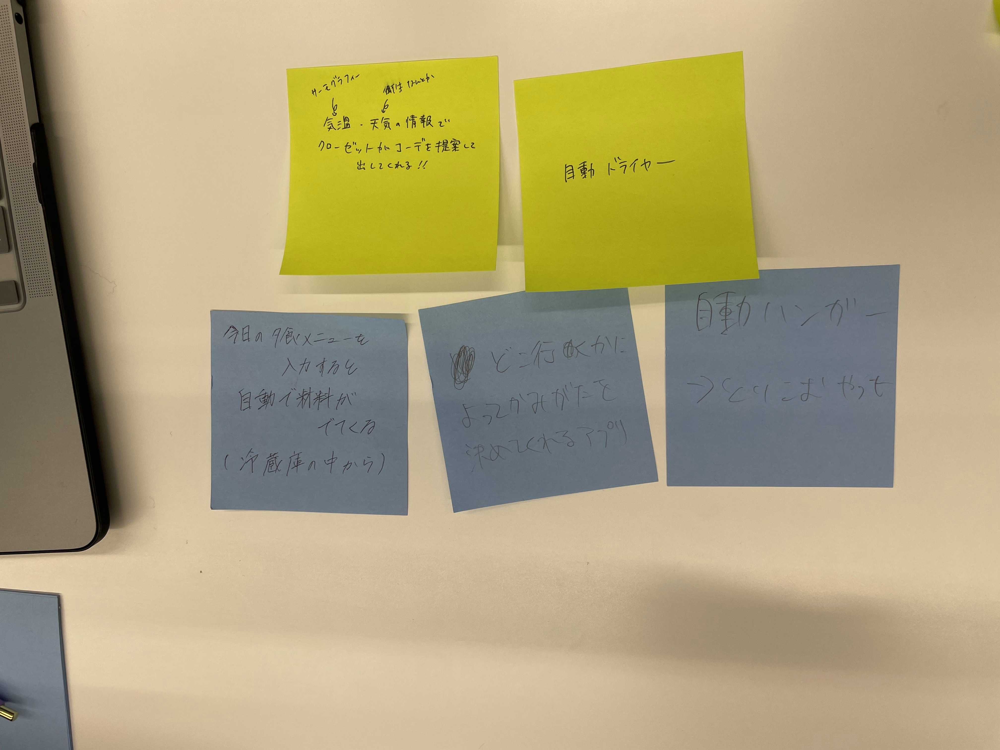
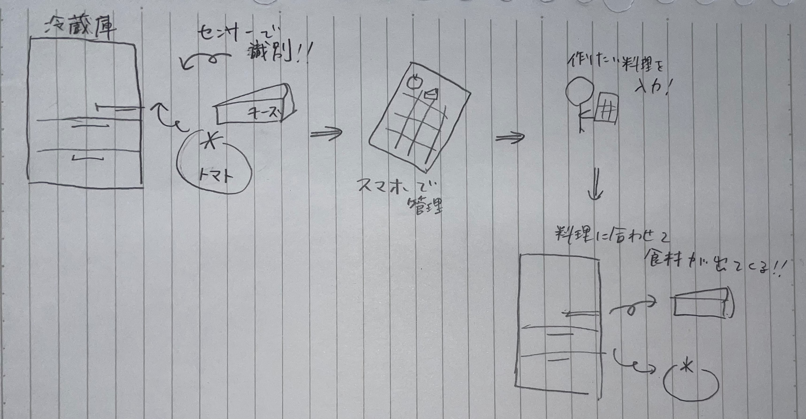

IoTとは
IoTとは「Internet of Things」の略語であり、日本語で「モノのインターネット」とも呼ばれる。
これはインターネットに接続された様々な「モノ」（デバイス、センサー、アプリケーションなど）が、相互に通信し、データを収集、共有、分析することができるシステムのことを指す。
IoTを使用することで、あらゆる種類のモノ（例えば、自動車、家電製品、照明、ビル、街など）が、インターネットを介して相互に通信することができ、より効率的に操作、管理、制御されるようになる。
IoTは、自動化、効率化、コスト削減、生産性向上など、多くのビジネスや産業分野で利用されている。
例：スマートホーム、スマートグリッド、スマートシティ、自動運転車
グループワーク ポストイット

自分で考えたアイディア
